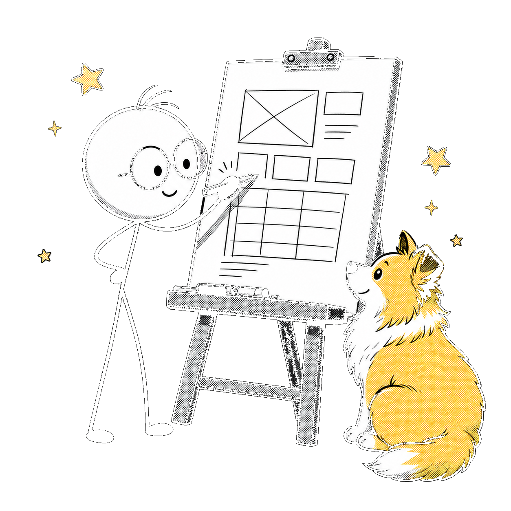
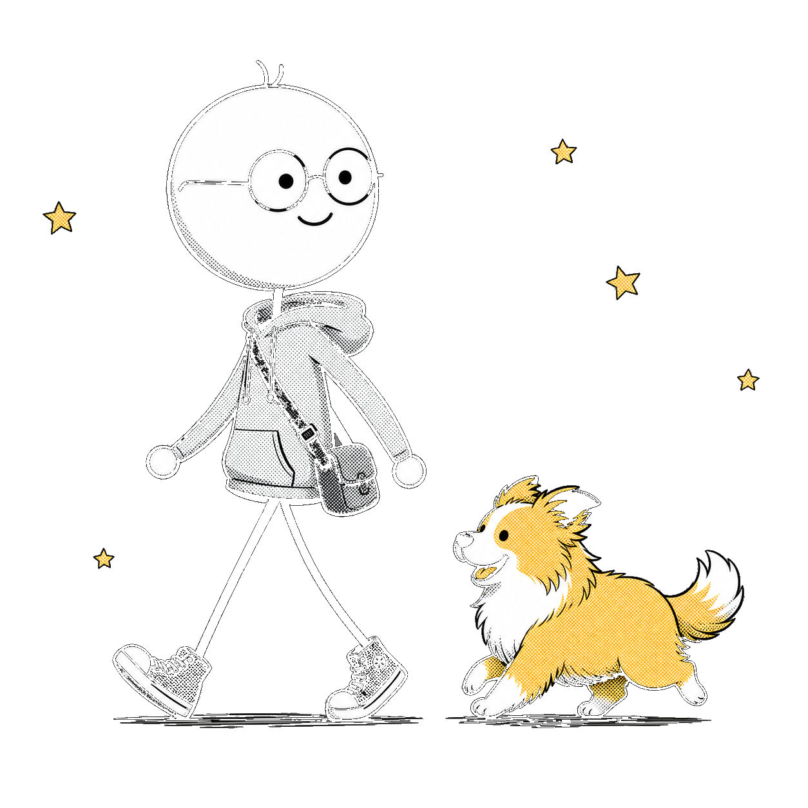

OIL-SLIDES · STYLE SAMPLE
图比字多，
一页一个想法
oil-slides 的风格样张：白底网格，黑白灰加一点暖黄，漫画墨水插画放在蒙版色块容器里。
oil-slides 的风格样张：白底网格，黑白灰加一点暖黄，漫画墨水插画放在蒙版色块容器里。

纯白打底，细网格让空白不空；颜色只留一个暖黄，落在高亮、色块容器和狗身上。
结构、对比、流程这类页不用插画，就像这页——CSS 图示够了。
